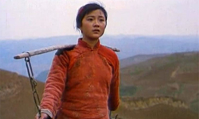
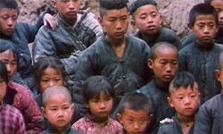
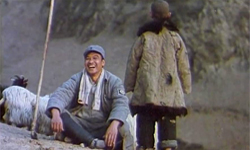
In 1978, Zhang Yimou and Chen Kaige both enrolled at the Beijing Film Academy. Chen Kaige applied for the directing course, while Zhang Yimou applied for photography. After the two graduated in 1982, they both went to work at the Guangxi Film Studio. While working there, Chen Kaige acted as a director while Zhang Yimou was a cameraman / cinematographer.
This, their first collaboration, is a film that "changed the face of filmmaking in the country". Fifth generation directors were so-called because they created distinctive works with added political allegories in their films that made them different from conventional and social-realist filmmaking. Unlike other state products, "their films contain sophisticated reflections on the country’s history, culture and its evolution".
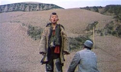
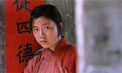
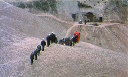
The film was produced in 1984 when Chen Kaige was working in the Shaanxi film industry. Chen Kaige had said in an interview that he wouldn’t be able to make a poetic film like Yellow Earth again. The screenplay for Yellow Earth was based on a novel by Ke Lan, "Echoes in the Deep Valley". The inspiration of the protagonist’s (Guqing) portrayal comes from Ke Lan himself, who was once a young cultural worker from Yan'an on a folksong collection mission.
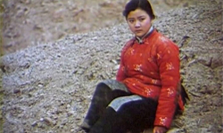
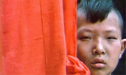
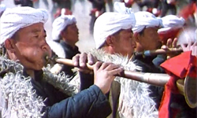
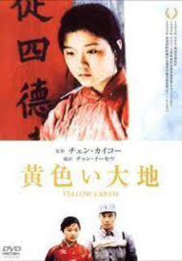
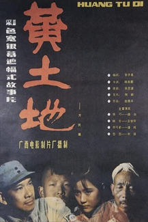
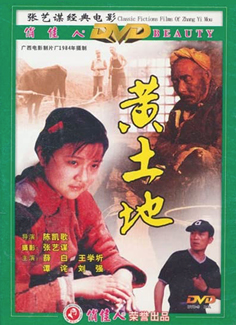
Zhang Yimou once said about his experience on the film: "Yellow Earth rarely has camera movement, most of it is almost like a 'dumb photo' shooting. The vast yellow land is quiet and deep in the still shot. This introverted and reserved shot expression is a good way to show the theme of the film. The use of fixed lenses is consistent with the basic tone of life on the yellow land. People living on the yellow land from generation to generation are backward in civilization and thought. This kind of almost frozen slow lens is like the slow historical process on the yellow land."
The main tone of the film is earthy yellow, which matches the symbol of motherhood of the yellow land. In addition to yellow, the film also highlights three other colours, namely black (cotton-padded jacket), white (towel) and red (wedding dress). These colours have their theme and implication to express. Red, for example, not only symbolises the helplessness of Chinese feudal marriage, but also represents a passion for freedom. Zhang Yimou once pointed out in an interview that colour is the most evocative narrative element.
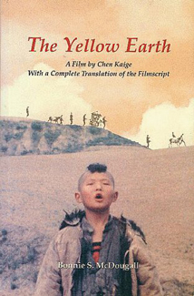
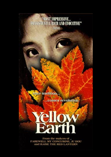
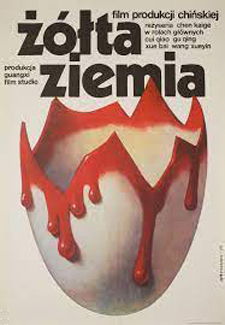